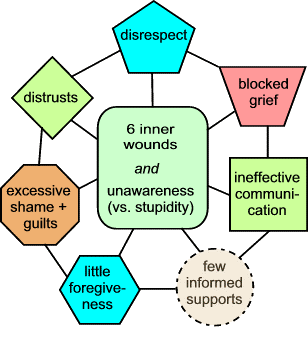

The Web address of this article is
http://sfhelp.org/relate/mates/ex.htm
Updated
02-05-2015
Clicking underlined links here will open a
new window. Other links will open an informational popup,
so please turn off your
browser's popup blocker or allow popups from this nonprofit Web site.
If your playback device doesn't support Javascript, the popups may not display.
Follow underlined links
after
finishing this article to avoid getting lost..
This
brief YouTube video previews what you'll find in this article. The video
mentions eight self-improvement lessons in this site. I've reduced that to
seven.
This is one of a series of Lesson-4 articles
on howtoevolve mutually-satisfying relationships. It applies to separated or
divorcing
mates with and without kids.
From
36 years' clinical experience
with hundreds of troubled couples and families, this article offers...
what's unique about ex-mate
relationships?
summaries of typical surface and primary ex-mate problems;
an overview of common extra problems
stepfamily adults face; and...
practical options and resources for improving ex-mate relations.
If you have "an ex mate problem," see if what follows applies to your
situation. Also keep any
divorcing friends in mind as you read this.
Ex-mate Relationships are Unique
Premise - All human
relationships exist to fill a set of each person's
primary
needs. Typical
mates seek to fill
special needs. When these needs
aren't filled well enough, the relationship becomes stressful or
self-destructive. When realistic hope of improvement dies in one or both
partners, so does
the relationship.
Typical ex-mate relationships
are unique compared to other adult relationships because...
Divorcing parents' values, behaviors, and attitudes
will affect each other until the last child
and grandchild dies. They can't just "walk away" from each
other because of their kids
and other genetic relatives and in-law relations;
Often, divorcing mates must negotiate and
abide by legal contracts over divorce settlements,
finances, and perhaps parenting agreements, The negotiation process and
expense often become significantly conflictual, and may recur if mates break
the contracts.
Typically, these factors are
amplified each time a divorcing parent chooses a new partner - specially
if the new mate has kids (and an ex) also. This means that relationship
needs and stresses affect three or more co-parents and their kids and kin, not
just the original couple.
Legal battles over divorce settlements
and co-parenting are
more common than in other combative relationships. These add to and
amplify the original reasons for divorce, and delay healthy grieving
and stable problem-resolution.
Typical divorcing partners and
their relatives and any kids are more susceptible to concurrent
values
and
loyalty
conflicts and divisive relationship
triangles
than other adult relationships;
Divorcing-adults' parents and siblings may
take sides, compounding family conflicts - specially if kids are
involved.
If ex mates seek professional help
to reduce relationship stressors, few clinicians are trained to diagnose
and improve the primary reasons for them (below).
Pause, breathe, and reflect - what are you thinking and feeling? Does this
summary of unique divorcing-mate traits seem realistic to you? If so, how many average divorcing
adults and
their kin and supporters do you think could describe these
factors?
Surface
and Primary Problems
Premise - personal and relationship "problems" are unfilled
needs, which range from
surface (superficial) to primary. If you haven't recently,
read these
examples of "digging down" to expose
primary needs, and return here.
This
video offers perspective on "difficult" ex-mate relations:
If
your family members have an "ex-mate problem," see if it's
about one or more of
these:
addiction
aggression
arguing / fighting
avoidances
child custody
child discipline
child education or health
child visitations
complaining / blaming
control
dishonesty
disrespect
favoritism
gossiping
holidays
hostility
inconsistency
legal disputes
money / debts
names and/or titles
possessions
parenting agreements
parental alienation
parental responsibilities
reactivity (drama)
religion
sibling conflicts
Each of these can be a significant family
stressor. None of
them are the primary problems!
Every one of these surface problems is
caused by
combinations of these...
Primary
Relationship Problems

Notice the major difference
between...
"My ex is stubborn, selfish, and
irresponsible. We fight constantly over money and responsibilities."
and...
"We both are wounded and unaware, and don't
know how to problem-solve as teammates yet. We have to admit and
reduce our wounds, learn to communicate and grieve, and then study how to
resolve our several values conflicts and relationship triangles.
"While we're
doing these things, we have to find ways to forgive ourselves and each
other for the hurts we inflicted during our relationship."
Can
you imagine average ex mates saying
something like this?
Implication - "ex mate
problems" like those in the table above are really a group of
concurrent primary problems in each former partner, not just
one of them.
For more perspective on these
problems and options for reducing them, see
this article and this brief research summary. Until ex mates and any new partners admit and work to reduce these
barriers, they risk remaining trapped in combative or avoidant
relationships. The risk of major marital and family stress is even higher
when kids and new partners (stepparents) are involved.
Here's why:
Extra Stepfamily Stressors
"Ex mate problems" in average
multi-home stepfamilies
usually include clusters of simultaneous extra stressors that
childless ex-mates don't experience. These extra problems usually include a
dynamic mix of...
adult ignorance of, and unrealistic
expectations about, stepfamily roles, relationships, and realities;
and...
loyalty conflicts
among ex mates, minor or grown kids, stepparents, stepsiblings, and two
or three sets of relatives; and...
clusters of adult
values conflicts
over effective parenting of minor stepkids; and...
one or more divisive relationship
triangles
among adults and kids; and...
concurrent re/marital conflicts about ex
mates and other stepfamily stressors; and...
stepchild and stepsibling behavioral
problems, and conflicts over child discipline and co-parenting
responsibilities - including "parental alienation syndrome (PAS);"
and...
special problems like legal stepchild
adoption, geographic moves, custody changes, and having an "ours child;"
and...
uninformed (potentially harmful) advice from
clergy, counselors, authors, and friends.
The
challenges for conflicted stepfamily adults, then, are to (1) learn how to
identify each of (a) the nine barriers in the graphic above and (b) these
extra step-stressors. Then (2) evolve an effective way of focusing and
reducing
each problem one at a time - as teammates. Most stepfamily adults
don't know how to do this, and increase their stress with these lose-lose
alternatives. Many eventually re/divorce
psychologically or legally.
So how
can ex mates with or without kids get along better?
Improvement Options
Premise - the most common sources of relationship problems between any two
people are...
ignorance or denial of these
core stressors. Another factor may be...
the people live in a
low-nurturance environment which promotes these problems.
If you have an "ex mate problem,"
you have many practical options:
__ adopt a long-range, patient
attitude. Your cluster of core problems (plural) will take many months to improve.
Useful motto: "Progress, not perfection!"
__ admit that YOU are causing half
of the core relationship problems. If you disagree or excuse
yourself, you're probably wounded and dominated by a false self.
__ commit to working patiently at
self-improvement
Lessons 1 thru 5.
If you're in a stepfamily, include Lessons 6 and 7.
__
convert
attitudes of blame and disrespect to
compassion, and view your and the ex's needs as being equally
worthy. If you can't do this, you're dominated by a false self.
__ assess yourself and the ex for
psychological wounds, and commit to
freeing your true Self to guide you
(Lesson 1). If your ex is significantly wounded (which is
likely), change the way you communicate with
her or him. Use these Lesson-2 suggestions and options as
appropriate.
__ identify which of the nine barriers
in the graphic above are contributing to your relationship problems.
Then commit to reducing your half of each of them one at a time. Use
this article and these resources to
help:
this relationship quiz. See what you need to learn, and study Lesson 4;
evolve and use a meaningful
Bill of Personal Rights, and
acknowledge the ex mate has equal rights;
identify any
communication blocks you and the
ex have practiced, and correct yours via Lesson 2 tools;
More improvement options...
__ invite your other family adults to
join you in learning how to spot and resolve values and loyalty
conflicts and relationship triangles. Use this article as a starting point;
__
if you're in a stepfamily,
acknowledge that any of the problems in the box above are NOT the problem.
Invite ALL your family adults (including your ex) to study and apply
Lesson 7 for your and your kids' sakes.
__ If you or your ex are considering
or using legal force to get your way, STOP, and focus on the
options above. Use this article as a
reference.
__ Get and stay clear on what you can
and cannot change, and regularly use these ageless
wisdoms.
__ Give a copy of this article to any
consultants and supporters, and ask them to join you in applying these
ideas to your situation.
Note
that these options also apply to marital and other relationships!
Pause, breathe, and reflect. What's your reaction to these
relationship-improvement
options? If it's anything other than interest and cautious optimism, you're
probably dominated by a false self and living in a low-nurturance
environment. Your existing and
unborn kids are silently depending on all you adults to act on these
options and guard them from inheriting the lethal [wounds + unawareness]
cycle!
Recap
This Leson-4 article exists because of widespread divorce in America, and
subsequent "relationship problems" between ex mates - specially those with
kids. The article summarizes...
how relations with ex
mates are unique compared to others;
typical surface and
primary relationship problems between ex mates,
extra problems typical
stepfamily adults and kids encounter; and...
practical options for
improving ex-mate relations in any family.
+ + +
Pause, breathe, and reflect - why did you read this article? Did you get
what you needed? If not, what do you need? Who's
answering
these questions - your
true Self,
or
someone else?